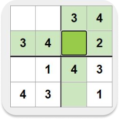

Ce site internet est un site vous permmettant de resoudre des Sudokus que vous importerez ou en remplissant une grille sur notre site.
Vous pouvez aussi decouvrir d’autres casse-tetes similaires au Sudoku.
Voir l’histoire du Sudoku ou meme acceder a un autre site proposant des jeux en lignes.

Histoire
Dans sa version moderne, le Sudoku est élaboré en 1979 par l'architecte américain Howard Garns, qui parvient à en vendre le principe, sous le nom de Number Place, aux journaux Dell Pencil Puzzles et Word Games.
Alors qu'il travaille dans une imprimerie, Maki Kaji découvre le casse-tête dans un magazine américain.
Le Japonais le fait ensuite figurer en 1980 dans le magazine nippon Puzzle Tsushin Nikoli, avant de fonder la maison d'édition Nikoli.
En 1986, Nikoli limite le nombre de cases à remplir à 30 et situe celles-ci autour du centre de la grille, deux innovations qui vont assurer la popularité du Sudoku au Japon.
Ce n'est qu'en 1997 que le jeu s'exporte au-delà des frontières de l'archipel, après les vacances d'un juge néo-zélandais au Japon, Wayne Gould.
Celui-ci, qui aperçoit le casse-tête dans un magasin de Tokyo, invente un logiciel capable de générer des grilles de Sudoku, qu'il se charge de proposer à des journaux.
En novembre 2004, le quotidien britannique Times accepte finalement de publier une grille.
Règles
Le Sudoku est un jeu où l'on doit compléter des cases à l'aide de chiffres allant de 0 à 9, sur une grille de 9 cases sur 9.
La règle est qu'aucun chiffre ne doit se retrouver deux fois dans la même ligne, la même colonne ou le même carré.
Contrairement à ce que son nom indique, le Sudoku n'est pas d'origine japonaise : son ancêtre est le "carré latin",
inventé au XVIIIe siècle par le mathématicien suisse Leonhard Euler, qui s'inspire lui-même du "carré magique" chinois.

Résolveur de Sudoku

Sites
Voici differents sites sur lesquels vous pouvez jouer a des jeux de societes en ligne
Chess.com

Board Game Arena
Tabletopia

Quelques jeux de societes
Ci-dessous une liste de différents jeux de société similaires au Sudoku.
Hitori

Hitori, venu tout droit du Japon où il remporte un succès comparable à celui du Sudoku, est un jeu aux multiples qualités.
Ses règles simples sont assimilées en quelques instants, mais leur utilisation offre des situations toujours variées et inédites.
Les auteurs, spécialistes des jeux de grilles, vous proposent 150 grilles, de plus, ils donnent les bonnes méthodes pour aborder ce jeu original et tout aussi captivant que son célèbre prédécesseur.
Un livre qui s'adresse à tous et qui renouvelle complètement le jeu de logique. À lire et relire pour en apprécier toutes les subtilités de ce jeu.
Suguru

La taille de la grille peut varier. Des zones sont délimitées dans la grille principale.
Si la zone contient 4 cases vous devez placer des nombres de 1 à 4, si la zone contient 5 cases vous devez placer des nombres de 1 à 5.
Un même nombre ne doit pas être présents 2 fois dans la même zone.
Une case adjacente ne peut pas contenir le même nombre même en diagonale (les zones ne comptent plus).
Si le nombre 2 est déjà placé au milieu de la grille vous savez que les 8 cases adjacentes ne peuvent pas contenir de 2.
Une seule solution est possible par grille.
>Binero
Le Binero est un dérivé du sudoku, où les cases ne contiennent que des 0 et des 1.
Les règles sont plus simples, donc le jeu est facile à prendre en main.Voici les règles :
- Chaque ligne et chaque colonne doit contenir autant de 1 que de 0.
- Il ne peut pas y avoir plus de deux 0 ou deux 1 à la suite.